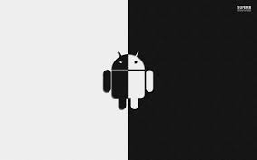

Android e un sistema operativo open source sviluppato da Google, ad oggi ed il piu venduto sul mercato. Giusto per chiarire le idee, stiamo parlando dei prodotti di Samsung, Sony, Motorola e molti altri marchi piu o meno conosciuti.
Android
e sicuramente il sistema piu appropriato per chi cerca un prodotto piu avanzato e con le minori limitazioni possibili. La differenza principale con i suoi antagonisti e la possibilita di fare praticamente tutto quello che viene fatto con un computer. compresa la gestione dei file in archivio con accesso alle varie cartelle di sistema, oppure lo scambio dati tra smartphone senza alcuna limitazione.
L utilizzo di base einfatti piuttosto intuitivo, anche se qualche volta potrebbe essere necessario perdere un po di tempo per capire come fare alcune operazioni. In ogni caso con un po di voglia di imparare e qualcuno a darvi le basi, vedrete che non e poi cosi difficile. Il sistema e quindi apparentemente piuttosto semplice, ma andando a scavare piu a fondo, troverete molti menu ed applicazioni che vi permetteranno di personalizzare praticamente qualsiasi cosa: Dalla grafica, alle animazioni, le icone, i caratteri, spesso addirittura il colore del led di notifica. In primo luogo il mercato delle